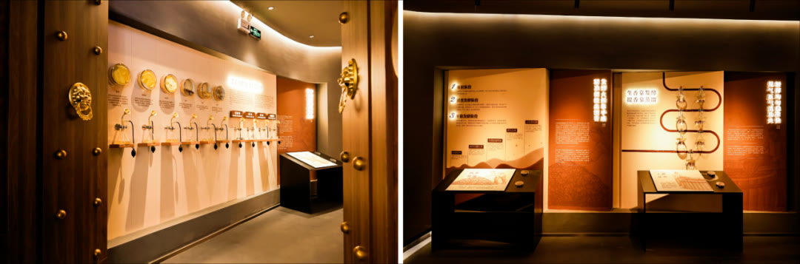

01 · 筑基
品牌三角建立人格化壁垒
项目从企业、产品与消费者关系中提炼人格化品牌，使品牌不只依赖酒类通用语言。

02 · 产品
围绕品牌人格开发产品
包装、命名和购买理由继续使用同一品牌核心，使新品借用已有认知而不是各自建立流量。

03 · 日历
营销日历把节日需求变成固定节奏
产品与重要节日提前组织，形成可重复的活动与供给计划。原案例记录，部分节日产品多次断货。

04 · 全域
从线上流量扩展到线下渠道
线上内容、电商交易与线下触点共同使用品牌资产，降低单一平台变化带来的经营风险。